Keaton Wilson, modified by EKB and Jeremy McWilliams
Learning Outcomes
Students will be able to apply basic data science knowledge to find the cause of a real-world scenario–food poisoning!
Students will be able to use ggplot to generate histograms, scatter plots, and bar charts from data sets, and save them to image files.
Students will be able to use visual-thinking skills to create visualizations that allow them to explore patterns in data, draw inferences, and create solutions.
Introduction to the problem
We have a wave of people getting sick across the team. People are coming in complaining of stomach sickness. Doctors have ruled out a communicable viral infection like norovirus, so it seems likely to be a food contamination issue.
The two main sources of food that are grown on site and distributed to team members are plants grown in hydroponic greenhouses (mostly Swiss chard, cucumbers and radishes) and fish (tilapia, a tolerant warm-water species, and rainbow trout, a cold-water species). Team members vary in the composition of their diet; people are allowed to choose how much of different food sources they eat.
Fortunately, we have some data to work with! We have data on the following:
which team members are sick
how much fish or plant material they incorporate into their diets
Quick Discussion
How might we go about trying to figure out what is causing the problem?
The Data
First we’re going to pull in the data and give it a quick inspection/exploration before we start to work through some of the visualization tools in R.
#load tidyverselibrary(tidyverse)
── Attaching core tidyverse packages ──────────────────────── tidyverse 2.0.0 ──
✔ dplyr 1.1.4 ✔ readr 2.1.5
✔ forcats 1.0.0 ✔ stringr 1.5.1
✔ ggplot2 3.5.1 ✔ tibble 3.2.1
✔ lubridate 1.9.3 ✔ tidyr 1.3.1
✔ purrr 1.0.2
── Conflicts ────────────────────────────────────────── tidyverse_conflicts() ──
✖ dplyr::filter() masks stats::filter()
✖ dplyr::lag() masks stats::lag()
ℹ Use the conflicted package (<http://conflicted.r-lib.org/>) to force all conflicts to become errors
# assign data set to variable "sick"sick<-read_csv("sick_data.csv")
Rows: 349 Columns: 10
── Column specification ────────────────────────────────────────────────────────
Delimiter: ","
chr (4): last, first, sex, specialties
dbl (6): age, height_cm, weight_kg, perc_fish, perc_plant, doctor_trips
ℹ Use `spec()` to retrieve the full column specification for this data.
ℹ Specify the column types or set `show_col_types = FALSE` to quiet this message.
Histograms
We’re going to look at a couple ways to create a histogram. The first is with the base R function hist, and the second is with ggplot (from the tidyverse). From today forward we’re going to exclusively use ggplot for data visualizations, as it’s the standard in R/data science.
Let’s first look at the hist function.
# use base R "hist" functionhist(sick$age)
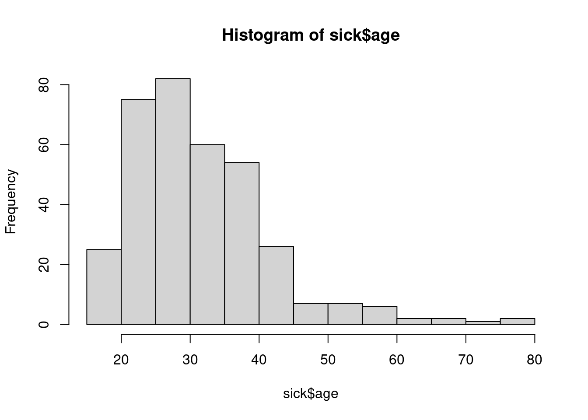
Now let’s create a histogram with the same data using ggplot. First, let’s talk a little about ggplot:
What is ggplot?
ggplot is an R package, and is part of the tidyverse. The “gg” translates to “grammar of graphics”, and is founded in the idea that all data visualizations are comprised of three components:
data set
aesthetics, or visual marks that represent the data (i.e. the stuff that you see)
geometric objects, or “geoms” (e.g the type of plot)
In the files tab (lower-right window), take a look at the ggplot-cheatsheet.pdf. In addition, there’s lots of documentation on the internet on ggplot.
# Data set: "data=sick" (the data set)# Aesthetics: "mapping=aes(x=age)" (the stuff you see)# Geoms: "geom_histogram()" (what type of plot)# Notice that the "+" is used to chain functions together in ggplotggplot(data=sick, mapping=aes(x=age))+geom_histogram(bins=12)
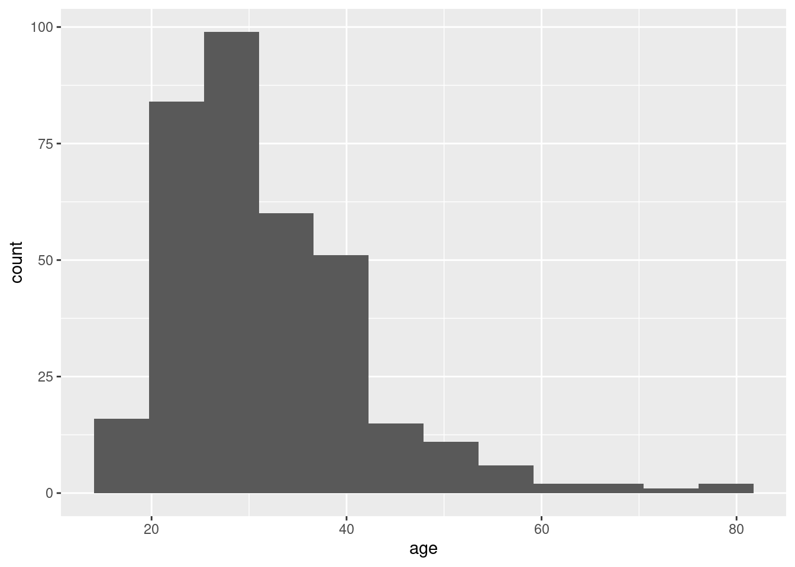
# 'bins' refers to the number of ranges data can fall in
We can improve the look by adding the “color” and “fill” attributes to geom_histogram. color indicates the outline color, and fill specifies the background color:
# add color and fill attributes to geom_histogram()ggplot(data=sick, mapping=aes(x=age))+geom_histogram(bins=12, color="black", fill="grey")
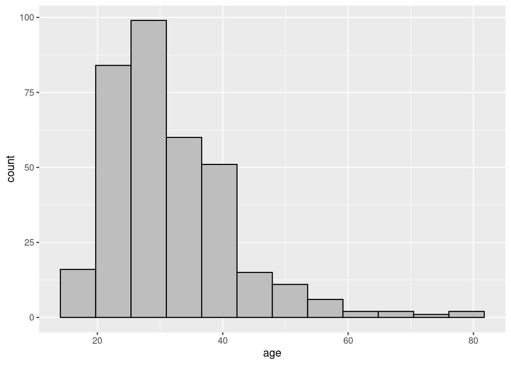
One of the keys to data visualization is making sure the data and units are very clear to the viewer. We can chain on the labs() function to create custom axis labels and title:
# chain "labs()" to the plot codeggplot(data=sick, mapping=aes(x=age))+geom_histogram(bins=12, color="black", fill="grey")+labs(title="Distribution of Team Anarctica Ages", x="Age (years)", y="Frequency")
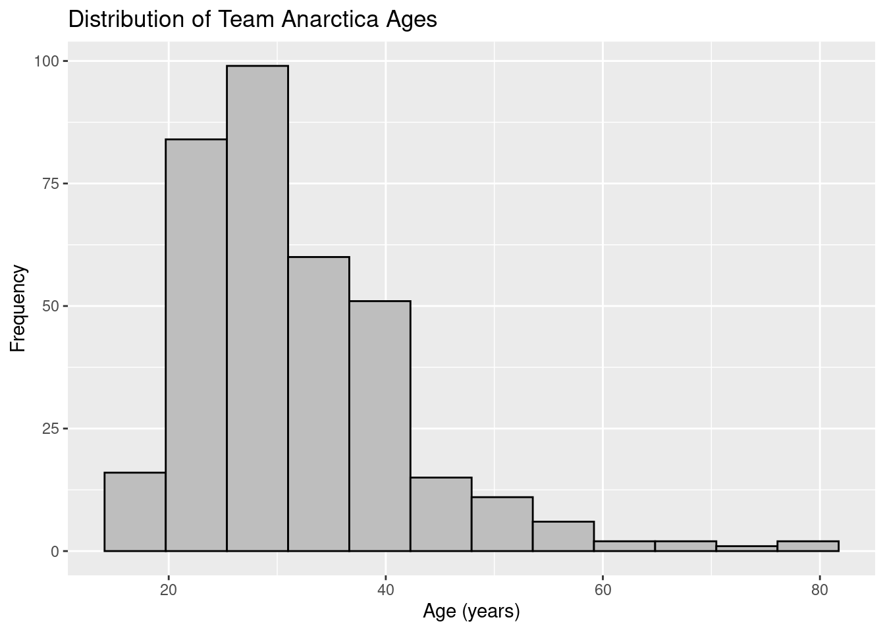
Create a histogram showing the distribution of height from the sick data set. Use the techniques show above to style it, and provide custom labels:
ggplot(data=sick, mapping=aes(x=height_cm))+geom_histogram(bins=12, color="black", fill="grey")+labs(title="Distribution of Team Anarctica Height", x="Height (cm)", y="Frequency")
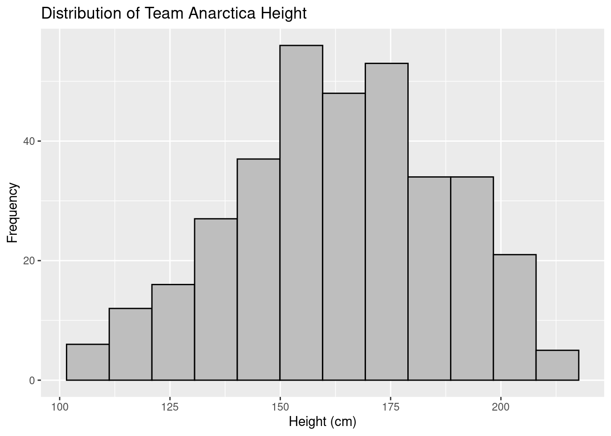
Scatter plots
Scatter plots are useful for visualizing if there is a potential association between two variables. Let’s take a look at an example scatter plot, displaying age on the x-axis (independent variable), and weight on the y-axis (dependent variable). You’ll see this is pretty similar to histogram code above, except for an additional attribute in the mapping aes function (y=), and a different geom function (geom_point):
# use ggplot with geom_point()ggplot(data=sick, mapping=aes(x=age, y=weight_kg))+geom_point()
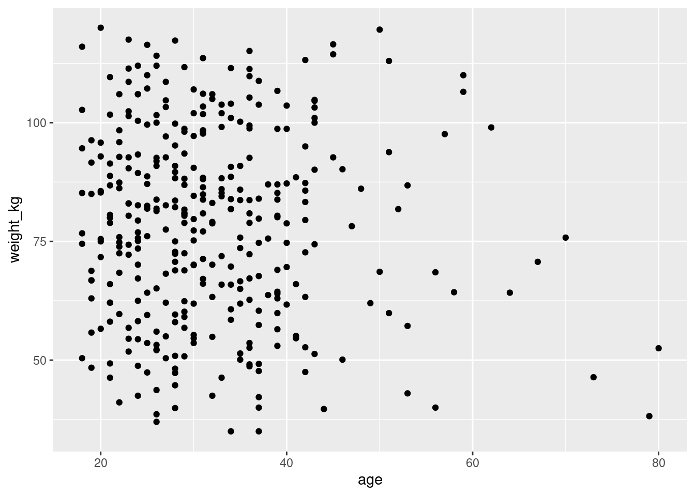
Try improving this plot by adding a title, x- and y-axis labels, and perhaps some color.
#add color attribute to geom_point, and chain labs() at the endggplot(data=sick, mapping=aes(x=age, y=weight_kg))+geom_point(color="blue")+labs(title="Weight x Age of Team members", x="Age (yrs)", y="weight (kg)")
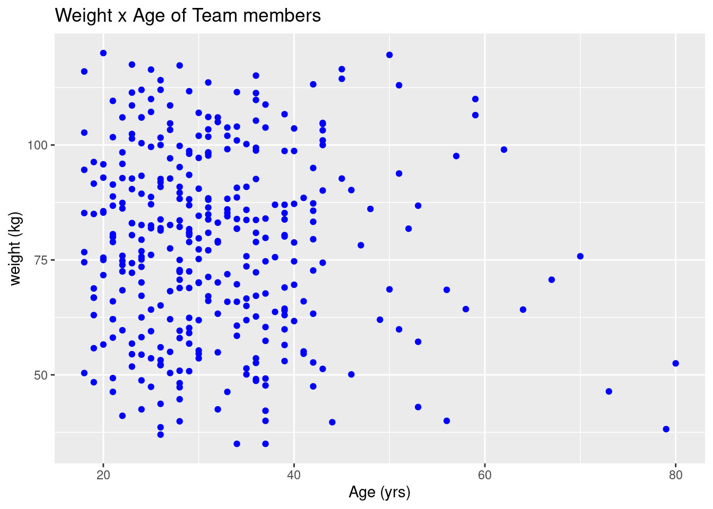
In your group or with your neighbor, create a scatter plot to show what variables might be associated to give some clues about the root of the sickness. Use proper labels and add some color. Try some different variables until you see what might be a pattern.
# What two variables might be useful in solving the mystery? Try multiple combinations if needed.ggplot(data=sick, mapping=aes(x=perc_fish, y=doctor_trips))+geom_point(color="red")+labs(title="Association of % fish in diet with trips to the doctor", x="Percentage of fish in diet", y="Number of trips to doctor (past 6 mos)")
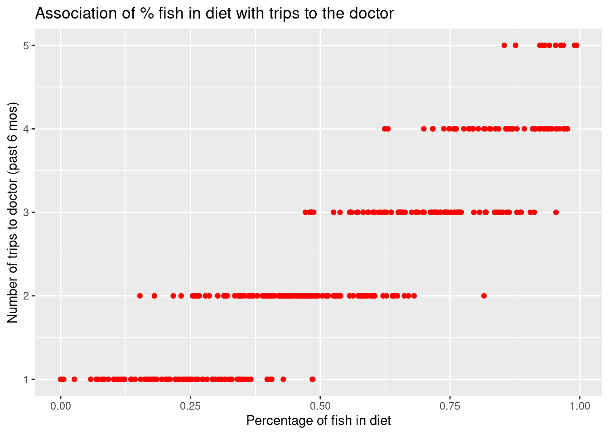
Bar Plots
Lastly we’re going to look at bar plots. One key difference between bar plots and the previous two plots we examined is that bar plots often show summary statistics of categorical variables, instead of all data. As such, we’ll need to use strategies from Module 1 to group data and generate statistics.
Let’s say we’re interested in creating a visualization showing the means on doctor visits in males and females. First we’ll need to group the data and generate the means, using group_by/summarize:
# A tibble: 3 × 2
sex meanVisits
<chr> <dbl>
1 F 2.43
2 I 2.67
3 M 2.35
Now that we have our data grouped with the average doctor visits, let’s use it to create a bar chart:
# use ggplot with geom_bar function. stat="identity" means use the data values from the data set for the y-axis, rather than countggplot(data=drVisits, mapping=aes(x=sex, y=meanVisits))+geom_bar(stat="identity")
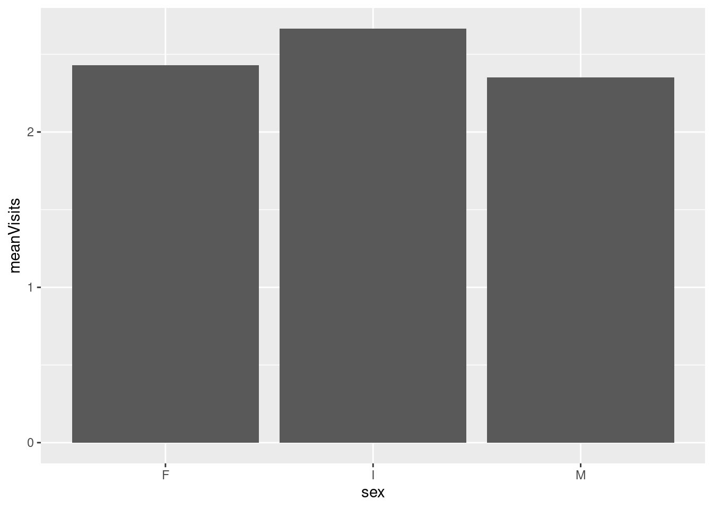
We can improve this in a couple ways. Like before we can add better labeling with labs. But we can also add some color and a legend by using the “fill” attribute in the aes function, and set it to the sex variable:
#add labs()ggplot(data=drVisits, mapping=aes(x=sex, y=meanVisits, fill=sex))+geom_bar(stat="identity")+labs(title="Average doctor visits by sex", x="Sex", y="Average dr visits, last 6 months")
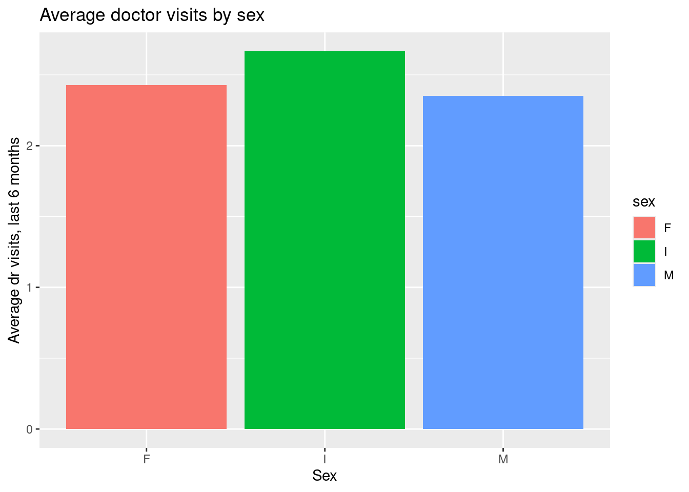
Let’s say were interested in comparing average plant consumption among team members who specialize in Climatology, Data Science, and Psychology. Create a bar plot below showing the average plant consumption among the three groups (hint: you may need to filter your data first).
# create your subset of data from 'sick' first, then group_by/summarizecliDsPsy<-sick %>%filter(specialties=="Climatology"| specialties=="Data Science"| specialties=="Psychology") %>%group_by(specialties) %>%summarize(avgPlant=mean(perc_plant))# now use this subset for generating the bar plotggplot(data=cliDsPsy, mapping=aes(x=specialties, y=avgPlant, fill=specialties))+geom_bar(stat="identity")+labs(title="Plant consumption among Aquaculture, Geology, and Psycology Specialists", x="Specialty", y="Average percent of plant intake in diet")
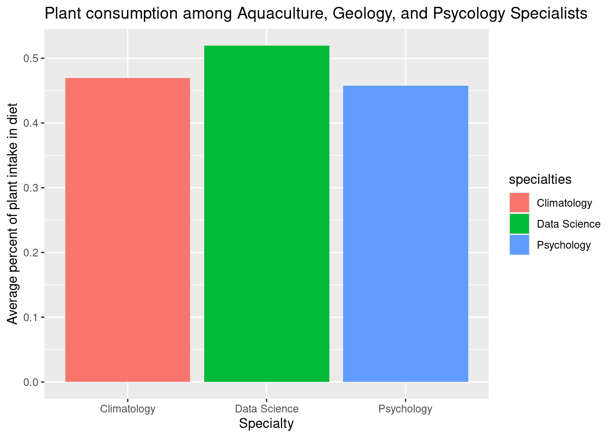
Saving plots
It’s likely at some point you may want to save your plots to image files. There’s a handy function to do this: ggsave. ggsave takes the argument of an image file name (e.g. myPlot.jpg), and optionally a variable, if you have your plot assigned to a variable - if not, it will save the last plot rendered.
# create a plot, but assign it to a variableageHist<-ggplot(data=sick, mapping=aes(x=age))+geom_histogram(bins=12,color="black", fill="grey")+labs(title="Age distributiuon of team members", x="Age(years)", y="Distribution")# use ggsave to save it to a fileggsave("ageHistPlot.jpg", ageHist)